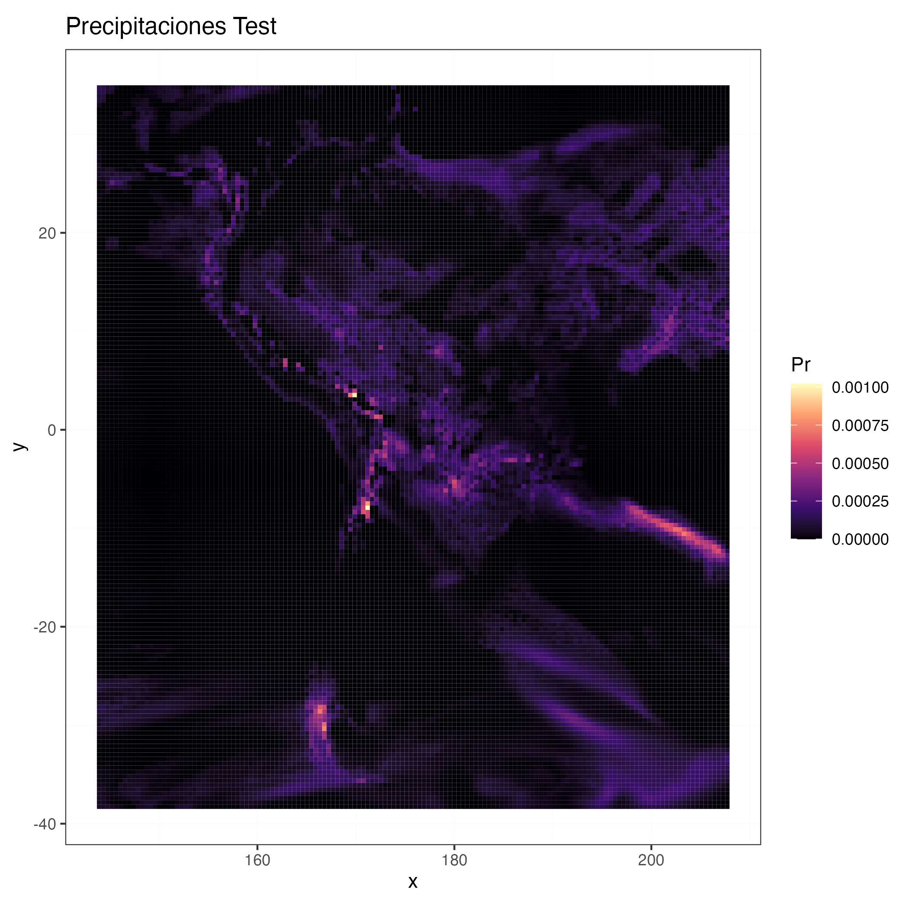
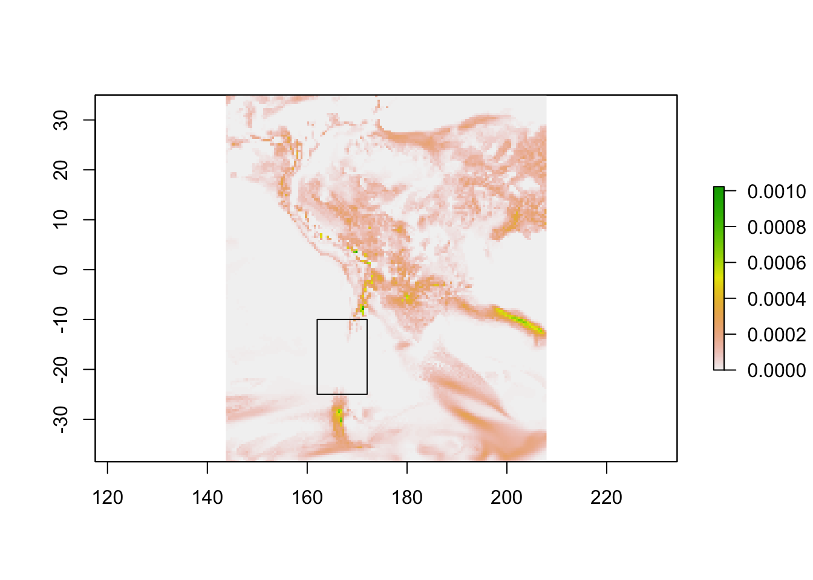
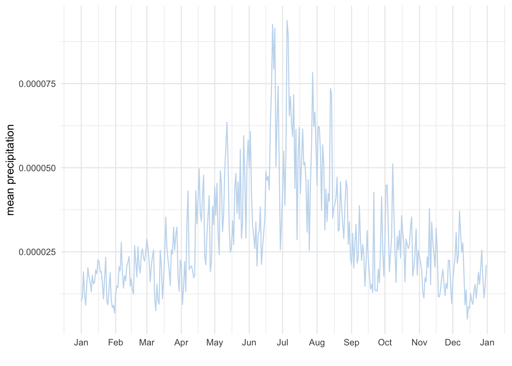
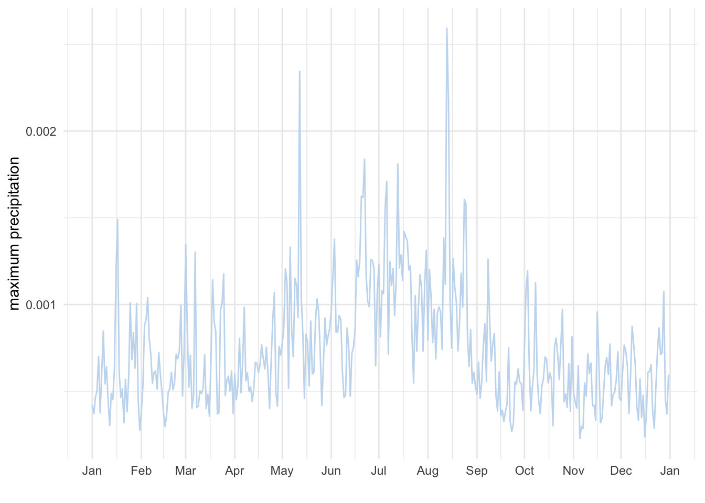
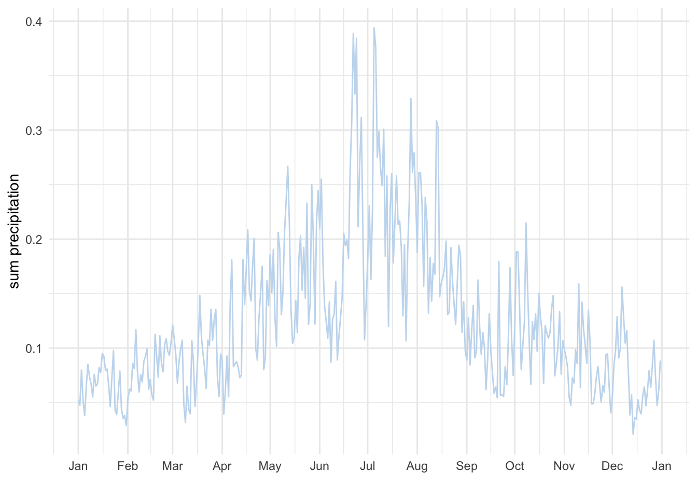
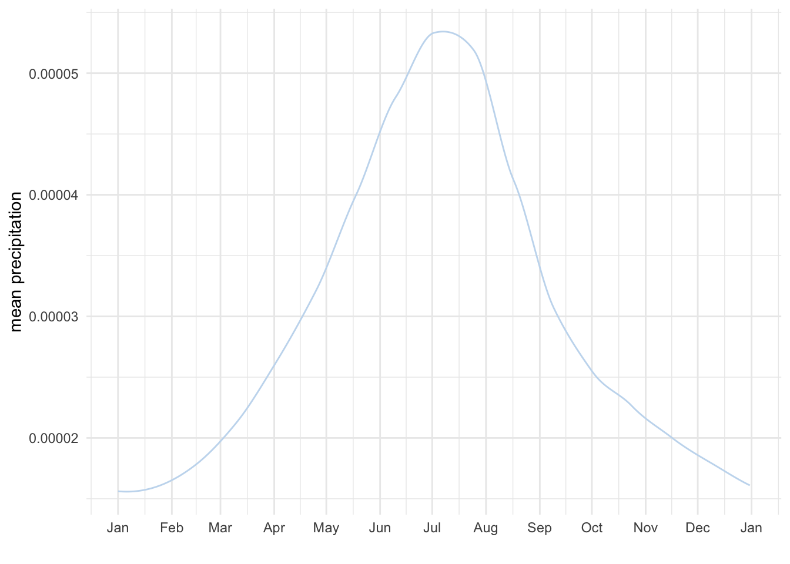
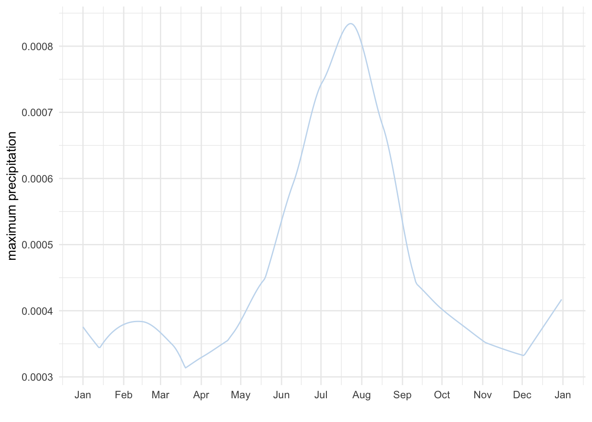
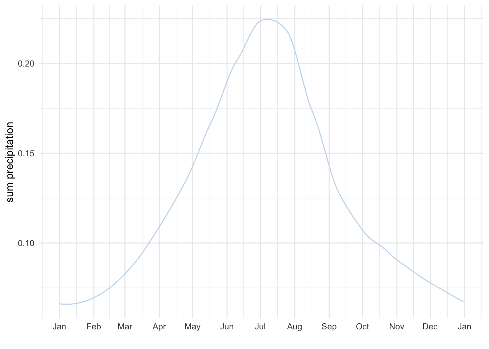

file_1 <- "data/historical/pr_SAM-44_MIROC-MIROC5_historical_r1i1p1_SMHI-RCA4_v3_day_19510101-19551231.nc"Appendix A — Análisis Exploratorio
A.1 Selección de Modelo
Descripción inicial
A.2 Lectura
Librerías
library(raster)
library(dplyr)
library(lubridate)
library(ggplot2)r_pr_base <- brick(file_1, varname = "pr")r_pr_base_test <- r_pr_base[[1]]
# rastero to df (na omit)
raster_df <- raster::as.data.frame(r_pr_base_test, xy = TRUE) %>% na.omit()
names(raster_df)[3] <- "layer"
map_raster_df <- ggplot() +
geom_tile(data = raster_df ,
aes(x = x, y = y,
fill = layer)) +
scale_fill_viridis_c(name = "Pr", option = "A", direction = 1)+
coord_equal()+
ggtitle(paste0("Precipitaciones Test") ) +
theme_bw() +
theme(panel.grid.major = element_line(colour = "gray99"),
panel.grid.minor = element_line(colour = "gray99"))
map_raster_df
# ggsave(plot = map_raster_df,filename = "images/test_pr.png")
A.3 Definición de Región de Estudio (ROI)
ext <- extent(c(162, 172 , -25, -10 ))
plot(r_pr_base[[1]])
plot(ext, add = T)
r_pr <- crop(x = r_pr_base, y = ext, snap="out")A.4 Promedio Diario de la serie
A continuación se genera vector con fechas en formato día año
time_days <- names(r_pr) %>% gsub("X", "", .) %>%
gsub("\\.", "-", .) %>%
yday()
time_days <- time_days[time_days!=366]
head(time_days)[1] 1 2 3 4 5 6tail(time_days)[1] 360 361 362 363 364 365Calculo de promedios por día anual
# calculate the average
beginCluster(4)
r_pr_mean <- clusterR(r_pr, stackApply, args = list(indices = time_days, fun = mean))
r_pr_max <- clusterR(r_pr, stackApply, args = list(indices = time_days, fun = max))
r_pr_sum <- clusterR(r_pr, stackApply, args = list(indices = time_days, fun = sum))
endCluster()
r_pr_mean
nlayers(r_pr_mean)
r_pr_mean <- dropLayer(r_pr_mean, 366)
r_pr_max <- dropLayer(r_pr_max, 366)
r_pr_sum <- dropLayer(r_pr_sum, 366)class : RasterBrick
dimensions : 35, 24, 840, 365 (nrow, ncol, ncell, nlayers)
resolution : 0.44, 0.44 (x, y)
extent : 161.74, 172.3, -25.3, -9.9 (xmin, xmax, ymin, ymax)
crs : NA
source : memory
names : layer.1, layer.2, layer.3, layer.4, layer.5, layer.6, layer.7, layer.8, layer.9, layer.10, layer.11, layer.12, layer.13, layer.14, layer.15, ...
min values : 0.00000000000000, 0.00000000000000, 0.00000000000000, 0.00000000000000, 0.00000000000000, 0.00000000000000, 0.00000000000000, 0.00000000000000, 0.00000000000000, 0.00000000000000, 0.00000000000000, 0.00000000000000, 0.00000000000000, 0.00000000000000, 0.00000000000000, ...
max values : 0.00016689301, 0.00019640923, 0.00014224052, 0.00020713806, 0.00026211739, 0.00020189285, 0.00029182434, 0.00024762154, 0.00019621849, 0.00022325516, 0.00018463135, 0.00011682510, 0.00015563965, 0.00018925667, 0.00024924278, ... [1] 365A.5 Serie de Tiempo Raw
Cáculo de estadísticas generales por día año
val_mean_daily <- cellStats(r_pr_mean, stat = "mean")
val_max_daily <- cellStats(r_pr_max, stat = "max")
val_sum_daily <- cellStats(r_pr_sum, stat = "sum")# Crear setie de tiempo
date_v = seq(as_date("1951-01-01"), as_date("1951-12-31"), "day")
df_mean <- data.frame(date = date_v, pr = val_mean_daily)
df_max <- data.frame(date = date_v, pr = val_max_daily)
df_sum <- data.frame(date = date_v, pr = val_sum_daily)ggplot(df_mean,
aes(date, pr)) +
geom_line(color = "#c6dbef") +
scale_x_date(date_breaks = "month", date_labels = "%b") +
scale_y_continuous() +
labs(y = "mean precipitation", x = "", colour = "") +
theme_minimal()
ggplot(df_max,
aes(date, pr)) +
geom_line(color = "#c6dbef") +
scale_x_date(date_breaks = "month", date_labels = "%b") +
scale_y_continuous() +
labs(y = "maximum precipitation", x = "", colour = "") +
theme_minimal()
ggplot(df_sum,
aes(date, pr)) +
geom_line(color = "#c6dbef") +
scale_x_date(date_breaks = "month", date_labels = "%b") +
scale_y_continuous() +
labs(y = "sum precipitation", x = "", colour = "") +
theme_minimal()
A.6 Smooth Serie
Función de suavizado
daily_smooth <- function(x, span = 0.5) {
if (all(is.na(x))) {
return(x)
} else {
df <- data.frame(yd = 1:length(x), ta = x)
m <- loess(ta ~ yd, span = span, data = df)
est <- predict(m, 1:length(x))
return(est)
}
}Aplicar función a al raster
r_mean_smooth <- calc(r_pr_mean, fun = daily_smooth)
val_mean_daily <- cellStats(r_mean_smooth, stat = "mean")
r_max_smooth <- calc(r_pr_max, fun = daily_smooth)
val_max_daily <- cellStats(r_max_smooth, stat = "max")
r_sum_smooth <- calc(r_pr_sum, fun = daily_smooth)
val_sum_daily <- cellStats(r_sum_smooth, stat = "sum")date_v = seq(as_date("1951-01-01"), as_date("1951-12-31"), "day")
df_mean <- data.frame(date = date_v, pr = val_mean_daily)
df_max <- data.frame(date = date_v, pr = val_max_daily)
df_sum <- data.frame(date = date_v, pr = val_sum_daily)ggplot(df_mean,
aes(date, pr)) +
geom_line(color = "#c6dbef") +
scale_x_date(date_breaks = "month", date_labels = "%b") +
scale_y_continuous() +
labs(y = "mean precipitation", x = "", colour = "") +
theme_minimal()
ggplot(df_max,
aes(date, pr)) +
geom_line(color = "#c6dbef") +
scale_x_date(date_breaks = "month", date_labels = "%b") +
scale_y_continuous() +
labs(y = "maximum precipitation", x = "", colour = "") +
theme_minimal()
ggplot(df_sum,
aes(date, pr)) +
geom_line(color = "#c6dbef") +
scale_x_date(date_breaks = "month", date_labels = "%b") +
scale_y_continuous() +
labs(y = "sum precipitation", x = "", colour = "") +
theme_minimal()